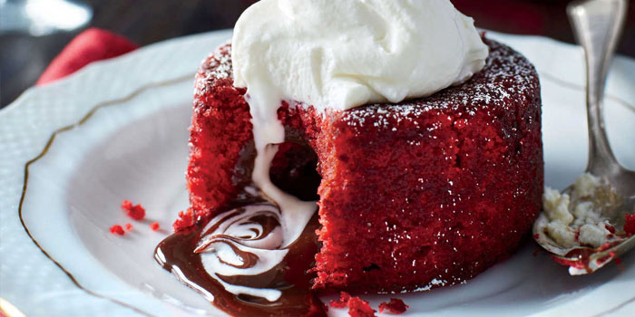

Red Velvet Cake

Ingredients: Cake
- 1/2 cup shortening
- 1 1/2 cup white sugar
- 2 eggs
- 2 tablespoon cocoa
- 4 tablespoon red food cooloring
- 1 tablespoon salt
- 1 cup buttermilk
- 2 1/2 cup sifted all purpose-flour
- 1 1/2 teaspoon baking soda
- 1 tablespoon distilled vinegar
Ingredients: Icing
- 5 tablespoon all purpose flour
- 1 cup milk
- 1 cup white sugar
- 1 cup butter
- 1 teaspoon vanilla extract
Time:
- Prep: 1h 30m
- Cook: 55m
- Ready In: 2h 25m
Directions:
- Preheat oven to 175 degrees C. Grease two 9-inch round pans.
- Make the cake: Whisk the flour, baking soda, cocoa powder, and salt together in a large bowl. Set aside.
- Using a handheld or stand mixer fitted with a paddle attachment, beat the butter and sugar together on medium-high speed until combined, about 1 minute. Scrape down the sides and up the bottom of the bowl with a rubber spatula as needed. Add the oil, egg yolks, vanilla extract, and vinegar and beat on high for 2 minutes. (Set the egg whites aside.) Scrape down the sides and up the bottom of the bowl with a rubber spatula as needed.
- With the mixer on low speed, add the dry ingredients in 2-3 additions alternating with the buttermilk. Beat in your desired amount of food coloring just until combined. I use 1-2 teaspoons gel food coloring. Vigorously whisk or beat the 4 egg whites on high speed until fluffy peaks form as pictured above, about 3 minutes. Gently fold into cake batter. The batter will be silky and slightly thick.
- Divide batter between cake pans. Bake for 30-32 minutes or until the tops of the cakes spring back when gently touched and a toothpick inserted in the center comes out clean. If the cakes need a little longer as determined by wet crumbs on the toothpick, bake for longer. However, careful not to overbake as the cakes may dry out. Remove cakes from the oven and cool completely in the pans set on a wire rack. The cakes must be completely cool before frosting and assembling.
- To Make Icing: Cook 5 tablespoons flour and milk over low heat till thick, stirring constantly. Let cool completely! While mixture is cooling, beat 1 cup sugar, butter, and 1 teaspoon vanilla until light and fluffy. Add cooled flour mixture and beat until frosting is a good spreading consistency. Frost cake layers when completely cool.